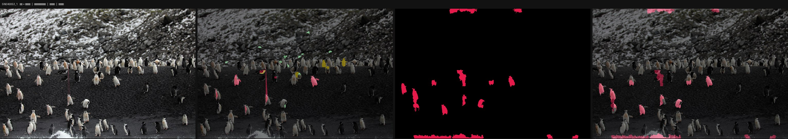
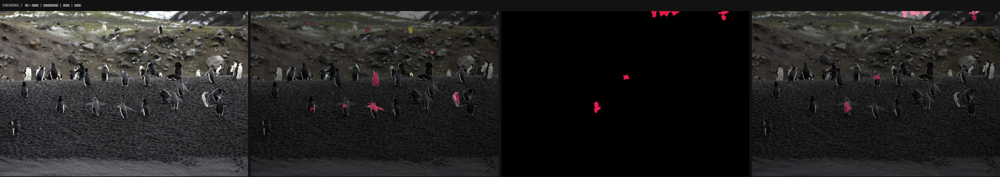
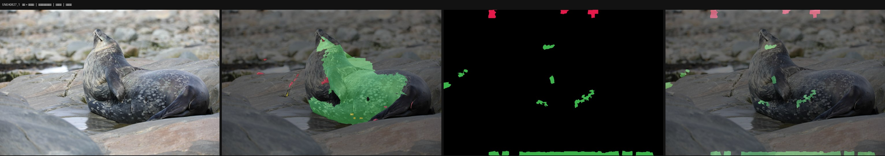
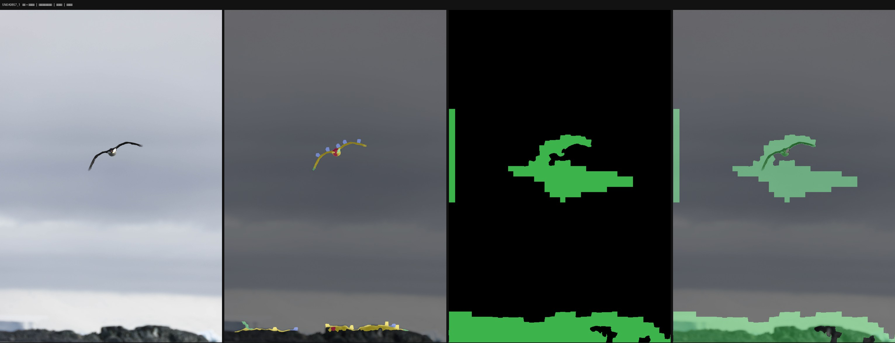
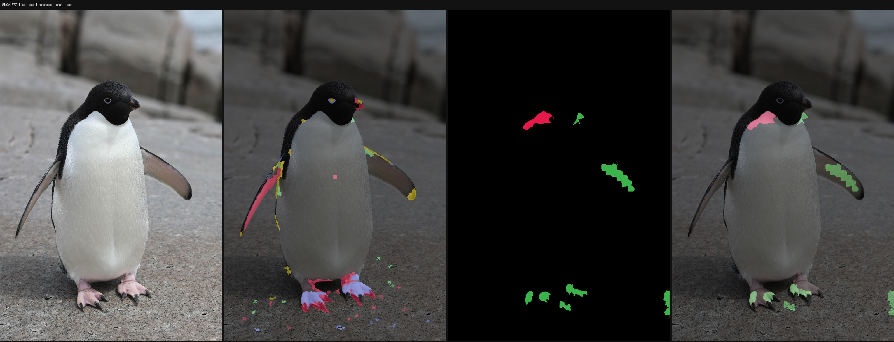
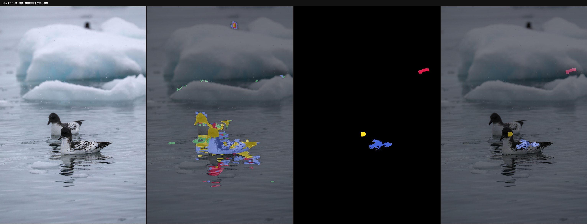
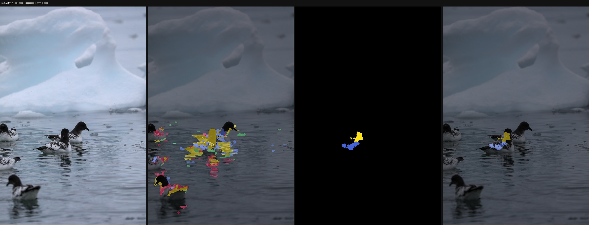
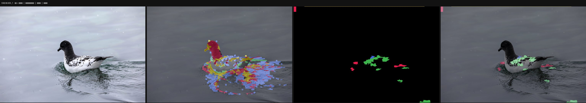

人工标注图的分割效果（best.pth）
面板依次为：原图+标注（白圈=单点，彩线=三角形）／伪标签（训练目标）／预测掩码／预测叠加。颜色：类1红、类2绿、类3黄、类4蓝。
5N0A0053_1 点正确率=0.667 三角形内部一致=0.683 预测前景占比=2.88%

5N0A0065_1 点正确率=0.667 三角形内部一致=0.000 预测前景占比=0.48%

5N0A0827_1 点正确率=nan 三角形内部一致=0.007 预测前景占比=2.86%

5N0A0838_1 点正确率=nan 三角形内部一致=0.012 预测前景占比=2.71%
5N0A0840_1 点正确率=1.000 三角形内部一致=nan 预测前景占比=7.65%
5N0A0856_1 点正确率=0.000 三角形内部一致=nan 预测前景占比=5.93%
5N0A0857_1 点正确率=0.000 三角形内部一致=nan 预测前景占比=12.41%

5N0A1577_1 点正确率=0.000 三角形内部一致=nan 预测前景占比=1.47%

5N0A5818_1 点正确率=nan 三角形内部一致=0.000 预测前景占比=0.24%
5N0A6421_1 点正确率=0.000 三角形内部一致=0.071 预测前景占比=0.49%

5N0A6425_1 点正确率=0.500 三角形内部一致=nan 预测前景占比=0.40%

5N0A6430_1 点正确率=0.000 三角形内部一致=nan 预测前景占比=1.52%

5N0A6480_1 点正确率=0.000 三角形内部一致=nan 预测前景占比=0.73%